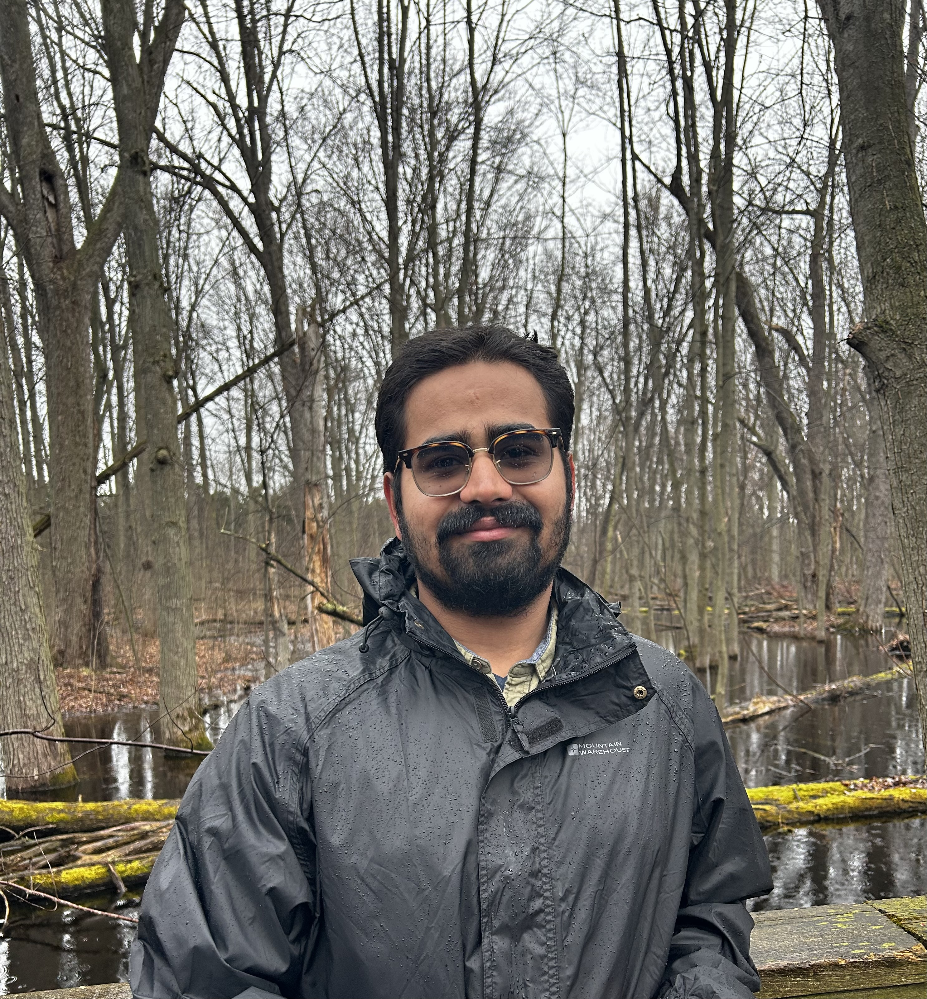

PhD Student in Pure Mathematics
University of Waterloo

I am currently a PhD student in Pure Mathematics at the University of Waterloo under the supervision of Matthew Kennedy and Andy Zucker. My main research interests are dynamics and operator algebras.
I completed my masters at the University of Waterloo under the supervision of Laurent Marcoux. My masters research project was a survey on the C*-envelope using the techniques of injectivity and boundary representations.
You can contact me at j2bal (at) uwaterloo (dot) ca.